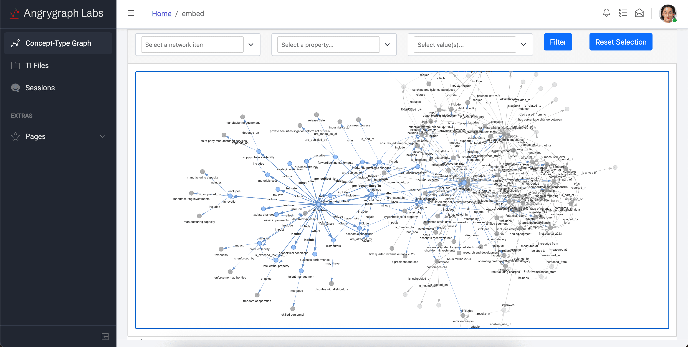
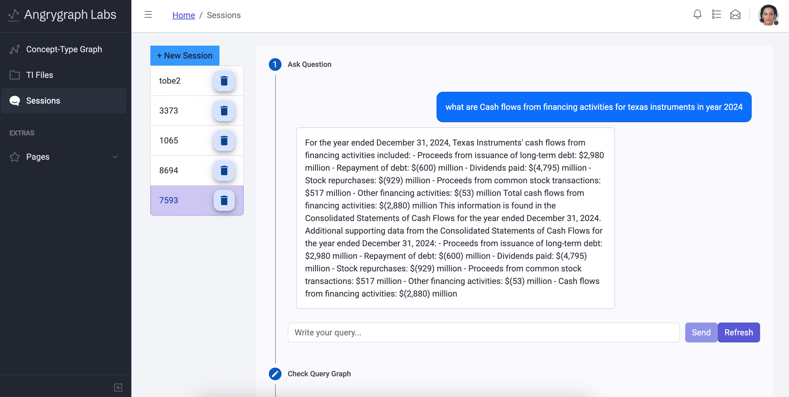

M*: Next-Gen Knowledge Inference
Transform your data in any shape into intelligent, interconnected knowledge networks. Mstar revolutionizes how AI systems understand and retrieve complex information through advanced graph-based retrieval.


M* Iterative Concept-Type Path Retrieval and Query Decomposition - PART 1
Powerful Features
Unlock the full potential of your data with cutting-edge graph technology
Intelligent Graph Construction
Automatically build comprehensive concept-type from structured or unstructured data using advanced NLP and entity recognition algorithms. 4x more entities more than state-of-the-art methods. Concept graphs differ from knowledge graphs by focusing solely on the relationships between concepts, without storing the underlying data.
Novel Retrieval
Retrieve relevant information with better accuracy than any other available method. Mstar has been benchmarked across multiple criteria, outperforming existing methods in query answering by 30% or more.
Deep Contextual Search
Surface insights from vast data sources with context-aware semantic search integrated into your workflows. Unlike standard RAG, Mstar excels in multi-hop reasoning, breaking down complex queries into logical steps for precise answers. This can assure you AI is fully understanding your query in a transparent fasion.
Full Model Transparency
Mstar allows you to trace every AI-generated answer back to its original data source. This ensures complete transparency, making it safe for critical decision-making scenarios where accuracy and accountability are demanded.
Freedom Of Environment
Mstar works seamlessly in a variety of environments, from local PCs to high-end GPU clusters and public AI endpoints like OpenAI. Its low resource requirements and iterative processing enable secure, cost-effective inference on sensitive data that cannot leave your servers.
Great visuals
Providing a amazing flow from query to final result will guide you in every step that model is using under the hood. Desigend with a simplicity in mind to allow any users be able to get the maximum out of the platform.
30%
Better Query Answering
5x
More Entity Extraction
8B
Models Params As Low As
Articles
You might find these articles interesting
Do you want to see more?
Join the demo session to check all the features live.